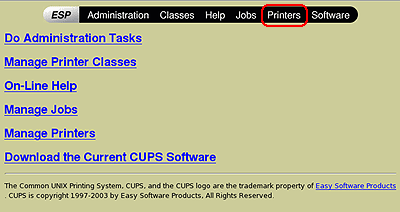
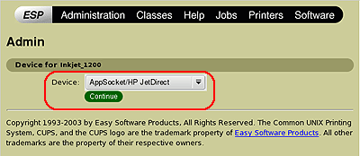
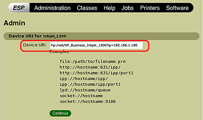
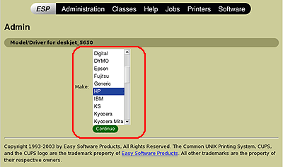
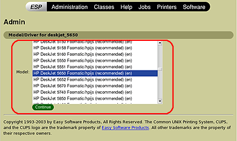

Installation - Step 4 - CUPS - Network
- Connect the printer to the network.
Note: See your printer documentation for specific instructions on connecting the USB, Parallel or Network cable to your printer and computer.
- Using the Printer Setup Menus on your printer, print the "Network Configuration" page. This page will have the IP address of the printer, which is essential to complete the printer setup.
Note: See your printer documentation for specific instructions on printing the network configuration page.
- Open a console/terminal window.
- Enter this command to search for the printer URI: (Example: "hp-makeuri 192.168.1.100")
hp-makeuri <printer.IP.address.from.step.2>
- Copy the CUPS URI created for the printer. (Example: "hp:/net/HP_Business_Inkjet_1200?ip=192.168.1.100")
Hint: Use the right-click menu to copy and paste text.
- Open a web browser, and then enter the following address in the Address box: http://localhost:631
- On the menu bar at the top of the page, click Printers -> Add Printer

- Enter the root username and password. (when prompted)
- Enter a name for your HP printer in the Name box.
Note: The name you enter must not contain spaces.
- (Optional) Enter a description of the location of the printer in the Location box. (Example: 3rd Floor Office)
- (Optional) Enter a description of the printer in the Description box. (Example: HPLJ3380)
- Click Continue.
- From the Device drop-down list, click Appsocket/JetDirect, and then click Continue.

- In the Device URI text box, paste the printer URI you copied in step 5, and then click Continue.

- In the Make list, click HP -> Continue.

- In the Model list, click the printer model that most closely matches your printer, and then click Continue.

Note: To configure your printer for using Fax, follow these steps, otherwise go to Step 28.
- Once the printer is added using the above steps, go back to step 6.
- At step 9, enter a name for your Fax device. Example: "photosmart_3310_fax"
- At step 14, select your device that starts with "hpfax://". Example: "hpfax:/usb/psc_2500_series?serial=XXXXXXXXX (HP psc_2500_series)
- At step 15, select HP
- At step 13, scroll to the very bottom and select "HPLIP Fax (en)
- Complete the setup process.
- Open the hp-toolbox. (Open a terminal/console window and enter;)
Note: You can also open the HP Device Manager by using the GNOME or KDE menu system.
hp-toolbox
Note If setting up fax continue else go to step 30.
- Select your printer.
- Click the "Tools & Settings" tab.
- Click "Setup Fax.."
- Enter your information in the "Fax Header Information" section.
- Click "Ok".
- Fax setup is now complete.

- Click the Tools & Settings tab, and then click Print Test Page.